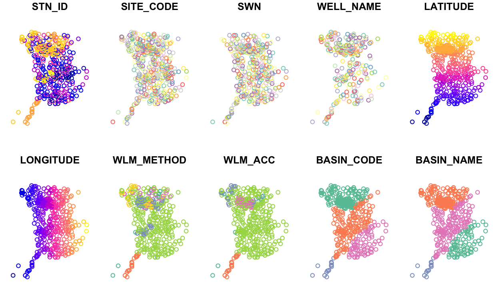

Learning objectives
- Read spatial data
- Understand how to convert a dataframe into an {sf} object
- Practice transforming {sf} spatial data between projections
- Demonstrate a spatial join,
st_intersection() - Create interactive webmaps
- Create static maps with the base
plot()method and {ggplot2} - Save/export static maps
Geospatial data with {sf}
R is a powerful tool for working with spatial data and making maps. Within R, you can do nearly everything that a GUI type program can do (e.g., ArcGIS or QGIS), and moreover, you can write a script to automate or scale up routine analyses, thus saving time on repetitive tasks and ensuring you create reproducible workflows.
There are a variety of spatial mapping/plotting packages in R. However, the best option being used widely for vector-based spatial data in R is the {sf} package. {sf} is a powerful, clean, and fairly straightforward approach because it has an easy to use syntax, it is fast and it can do most if not all of the tasks commonly done in other geospatial software programs. Even better, {sf} spatial objects are simply data.frames with a geometry column, so all of the tidy, wrangle, join, and plot capabilities from {dplyr} and {ggplot2} also work on {sf} objects. Therefore, it is possible to use R to address all your data processing needs in a single environment without the need to move between tools for tabular data (e.g., Excel) and geospatial data (e.g., ArcGIS or QGIS).

Figure 1: Illustration by @allison_horst.
Reading spatial data
The {sf} package can read spatial data in various formats (e.g., shapefile, GeoJSON, PostGIS, kml), and is very straightforward if the data is already spatial, requiring only a call to the function st_read().
# First we load the sf and here packages
library(sf)
library(here)
library(tidyverse)
# Read a shapefile of Sacramento county
sac <- st_read(here("data", "shp", "sac", "sac_county.shp"), quiet = TRUE)
colnames(sac)
[1] "OBJECTID" "COUNTY_NAM" "COUNTY_ABB" "COUNTY_NUM" "COUNTY_COD"
[6] "COUNTY_FIP" "Shape" "Shape.STAr" "Shape.STLe" "geometry" Converting a dataframe to sf
At other times, you may need to convert tabular data to a spatial format. To make an {sf} object, we are creating a geometry column. This contains all the geospatial information we need, and it lives within the dataframe. Importantly, this geometry column is sticky, meaning whatever we do to our data (tidy, filter, mutate etc) the associated geometry column will stick with the data. Whats awesome is this column can contain anything from information for a point to a line to a complex polygon all in one column. To make an {sf} object, we need to know two important pieces of information
coords: The columns that contain the geospatial coordinates (either name or column number)
crs: The projection or EPSG (CRS, SRID, etc) that the data in1
To practice, lets read all groundwater level monitoring stations in Sacramento County, stations_sac.csv, and convert this tabular data to an sf object with the function st_as_sf(). We will specify which columns contain the coordinates (coords), and what the projection, or coordinate reference system (crs) the data is in. In this case, we know the data is in NAD83, or EPSG 4269.
# read groundwater level stations in Sacramento county as dataframe
stations <- read_csv(here("data", "gwl", "stations_sac.csv"))
# check object class
class(stations)
[1] "spec_tbl_df" "tbl_df" "tbl" "data.frame" # convert stations into an sf object by specifying coordinates and crs
stations <- st_as_sf(stations,
coords = c("LONGITUDE", "LATITUDE"), # note x goes first
crs = 4269, # projection, this is NAD83
remove = FALSE) # don't remove lat/lon cols from dataframe
# check the class of the new object
class(stations)
[1] "sf" "spec_tbl_df" "tbl_df" "tbl"
[5] "data.frame" Projecting spatial data
A common problem in geospatial analysis is when two different datasets are in different projections. We can check the projection of our sac and stations objects with the function st_crs(), and transform our data (or re-project) with the st_transform() function.
We know stations is in NAD83, but what about sac? Lets check with st_crs(). Line 2 of the output indicates WGS84.
st_crs(sac)
Coordinate Reference System:
User input: WGS 84 / Pseudo-Mercator
wkt:
PROJCRS["WGS 84 / Pseudo-Mercator",
BASEGEOGCRS["WGS 84",
DATUM["World Geodetic System 1984",
ELLIPSOID["WGS 84",6378137,298.257223563,
LENGTHUNIT["metre",1]]],
PRIMEM["Greenwich",0,
ANGLEUNIT["degree",0.0174532925199433]],
ID["EPSG",4326]],
CONVERSION["Popular Visualisation Pseudo-Mercator",
METHOD["Popular Visualisation Pseudo Mercator",
ID["EPSG",1024]],
PARAMETER["Latitude of natural origin",0,
ANGLEUNIT["degree",0.0174532925199433],
ID["EPSG",8801]],
PARAMETER["Longitude of natural origin",0,
ANGLEUNIT["degree",0.0174532925199433],
ID["EPSG",8802]],
PARAMETER["False easting",0,
LENGTHUNIT["metre",1],
ID["EPSG",8806]],
PARAMETER["False northing",0,
LENGTHUNIT["metre",1],
ID["EPSG",8807]]],
CS[Cartesian,2],
AXIS["easting (X)",east,
ORDER[1],
LENGTHUNIT["metre",1]],
AXIS["northing (Y)",north,
ORDER[2],
LENGTHUNIT["metre",1]],
USAGE[
SCOPE["Web mapping and visualisation."],
AREA["World between 85.06S and 85.06N."],
BBOX[-85.06,-180,85.06,180]],
ID["EPSG",3857]]We can re-project, or transform the projection (crs) with st_transform() and by specifying the EPSG code to transform the data to. Here we use NAD83 (EPSG: 4269), so the Sacramento county boundary (sac) is in the same projection as the groundwater level monitoring points (stations).
sac <- st_transform(sac, crs = 4269)
Lastly, we verify our transformation worked.
st_crs(sac)
Coordinate Reference System:
User input: EPSG:4269
wkt:
GEOGCRS["NAD83",
DATUM["North American Datum 1983",
ELLIPSOID["GRS 1980",6378137,298.257222101,
LENGTHUNIT["metre",1]]],
PRIMEM["Greenwich",0,
ANGLEUNIT["degree",0.0174532925199433]],
CS[ellipsoidal,2],
AXIS["geodetic latitude (Lat)",north,
ORDER[1],
ANGLEUNIT["degree",0.0174532925199433]],
AXIS["geodetic longitude (Lon)",east,
ORDER[2],
ANGLEUNIT["degree",0.0174532925199433]],
USAGE[
SCOPE["Geodesy."],
AREA["North America - onshore and offshore: Canada - Alberta; British Columbia; Manitoba; New Brunswick; Newfoundland and Labrador; Northwest Territories; Nova Scotia; Nunavut; Ontario; Prince Edward Island; Quebec; Saskatchewan; Yukon. Puerto Rico. United States (USA) - Alabama; Alaska; Arizona; Arkansas; California; Colorado; Connecticut; Delaware; Florida; Georgia; Hawaii; Idaho; Illinois; Indiana; Iowa; Kansas; Kentucky; Louisiana; Maine; Maryland; Massachusetts; Michigan; Minnesota; Mississippi; Missouri; Montana; Nebraska; Nevada; New Hampshire; New Jersey; New Mexico; New York; North Carolina; North Dakota; Ohio; Oklahoma; Oregon; Pennsylvania; Rhode Island; South Carolina; South Dakota; Tennessee; Texas; Utah; Vermont; Virginia; Washington; West Virginia; Wisconsin; Wyoming. US Virgin Islands. British Virgin Islands."],
BBOX[14.92,167.65,86.46,-47.74]],
ID["EPSG",4269]]We can even ask R if the projection (crs) of sac and stations are identical, and they are.
We can also transform data using the actual sf object or dataframe, without needing to find the specific EPSG or CRS code. For example, if we want to transform our sac county polygon into the same projection as our stations data, we can do the following:
sac <- st_transform(sac, crs = st_crs(stations))
# verify these are the same
identical(st_crs(stations), st_crs(sac))
[1] TRUE# or look at just the EPSG code:
st_crs(sac)$epsg
[1] 4269st_crs(stations)$epsg
[1] 4269Spatial join with st_intersection()
With all of our spatial data in the same projection, we can perform a spatial join. Perhaps the most common spatial join is an intersection. For example, above, the stations object only contains stations in Sacramento County, but it came from a much larger set of stations (n = 43,807). Lets bring in all groundwater stations in the state of California, convert it to an sf object class, and plot the data.
As we can see above, groundwater monitoring stations are concentrated in Bulletin 118 subbasins.2
Using dplyr::filter() we can subset these stations to Sacramento County.
# filter to Sacramento county & verify this worked
stations_sac <- stations %>%
filter(COUNTY_NAME == "Sacramento")
# verify this worked
unique(stations_sac$COUNTY_NAME)
[1] "Sacramento"But what if we didnt have the county data already, or if we wanted to filter these data by a polygon that wasnt detailed in one of the existing variables in our dataframe? In this case, we can use st_intersection() which is a spatial join that takes two arguments, the sf object we want to filter (x), and another sf object to filter by (y). If we use x = all_gw_stations and y = sac it will return all of the points in all_gw_stations that fall within sac county.
Before performing the spatial join, we must re-project our data from a geographic coordinate reference system (CRS) to a projected coordinate reference system.3
# it's good practice to ensure your spatial data are in a projected CRS
# like meters before performing spatial operations, so we transform to 3310
all_gw_stations_3310 <- st_transform(stations, 3310)
sac_3310 <- st_transform(sac, 3310)
# perform the intersection
stations_sac_3310 <- st_intersection(all_gw_stations_3310, sac_3310)
# number of observations in each county
table(stations_sac_3310$COUNTY_NAME)
Placer Sacramento San Joaquin Sutter
2 485 1 1 Interestingly, there are 4 counties in our data after the spatial join. Why is that? If we visualize the data, we can see that all of these points are right on the border of Sacramento County, and the process that previously added county names to these data must have used a slightly different Sacramento county polygon than the one we are using in this module.
There are many many more methods available beyond intersections, including area, distances, buffers, crops, voronoi polygons, nearest neighbor calculations, convex hull calculations, centroid calculations, and much, much more. The list of operations within {sf} are shown below.
methods(class = 'sfc')
[1] [ [<- as.data.frame
[4] c coerce format
[7] fortify identify initialize
[10] mapView obj_sum Ops
[13] print rep scale_type
[16] show slotsFromS3 st_area
[19] st_as_binary st_as_grob st_as_s2
[22] st_as_sf st_as_text st_bbox
[25] st_boundary st_buffer st_cast
[28] st_centroid st_collection_extract st_convex_hull
[31] st_coordinates st_crop st_crs
[34] st_crs<- st_difference st_geometry
[37] st_inscribed_circle st_intersection st_intersects
[40] st_is_valid st_is st_line_merge
[43] st_m_range st_make_valid st_nearest_points
[46] st_node st_normalize st_point_on_surface
[49] st_polygonize st_precision st_reverse
[52] st_sample st_segmentize st_set_precision
[55] st_shift_longitude st_simplify st_snap
[58] st_sym_difference st_transform st_triangulate
[61] st_union st_voronoi st_wrap_dateline
[64] st_write st_z_range st_zm
[67] str summary type_sum
[70] vec_cast.sfc vec_ptype2.sfc
see '?methods' for accessing help and source codeTo learn more about advanced spatial operations, see the Spatial data module in the Intermediate to Advanced wrds course, and online books and resources.
Plotting {sf} data
With all of our spatial data in the same projection, we can start making maps! We will cover the built-in plot() method for {sf} objects, interactive maps with {mapview}, and plotting with {ggplot2}.
Inspect data with plot()
After reading spatial data you may want to plot it to make sure that it imported correctly, and to understand the fields. For a quick plot, you can simply use plot().
# plot the geometry
plot(sac$geometry)
If we dont specify the geometry column, plot() will plot the first 10 columns in the dataframe (you can control the number of subplots shown with the max.plot argument). Here we can see there are 4 distinct basins (BASIN_CODE) in Sacramento County.
plot(stations)

Interactive mapping with {mapview}
One of the easiest and coolest packages youll find for interactive mapping is {mapview}. As long as data are in sf format, you can quickly make an interactive map. First lets make sure we have an sf class of data.
class(stations)
[1] "sf" "spec_tbl_df" "tbl_df" "tbl"
[5] "data.frame" class(sac)
[1] "sf" "data.frame"Basic use
Next we can use the simple mapview() function to create an interactive webmap!
We can add {mapview} objects to one another in the same way we add layers to a ggplot, by using a +. We can then toggle them on and off from the interactive map from the top-left hand layer control icon. We can also change the basemap layers being used on the map from this same menu.
Note that we can open a {mapview} object in our default web browser by clicking on the little box and arrow to expand and view. This is particularly helpful when pop-up tables contain dense information, as is the case with our stations dataframe.

Customizing mapview
Not only can you combine mapview objects, but you can also customize their appearance by adjusting a variety of built-in arguments to the mapview() function.
Challenge 1: You Try!
- Create a new mapview object of Sacramento County (
sac), plusstationscolored by WELL_USE. Add the argumentburst = TRUE, and read the mapview documentation to learn what this does (Hint: Enter?mapviewand scroll to Arguments).
- Toggle all layers off except for irrigation and residential wells. Recall this relationship for the next module on EDA.
Click for Answers!
mapview(sac, # sacramento county sf polygon
alpha.regions = 0, # transparent interior
color = "red", # red outline
lwd = 2, # thick outline
layer.name = "Sac Co", # layer name
legend = FALSE) + # hide legend
mapview(stations, # stations sf points
zcol = "WELL_USE", # color by the well use
burst = TRUE) # split each category into a layer
Additional Info
{mapview} is a great package for quickly visualizing and sharing spatial data. To export and save a .html map that can be shared with others, its currently advisable to specify mapviewOptions(fgb = FALSE) after loading the library. This allows us to save the map as a self-contained html file. To do so, click on the Viewer tab, and then on Export > Save as Web Page. This .html file can then be zipped and emailed or shared, and opened in most web browsers.
Static maps with {ggplot2}
Interactive maps are useful for fast data exploration and integration into web applications, however, depending on the project, static maps may more appropriate for reports, presentations, and sharing. Mapmaking with {sf} objects in {ggplot2} follows the same syntax we practiced in the ggplot2 module, using the geom_sf() function.
Basic use
# put data in geoms rather than ggplot() as we have multiple datasets in one plot
p <- ggplot() +
geom_sf(data = sac) +
geom_sf(data = stations, color = "blue", alpha = 0.5)
Adding a north arrow and scale bar is achieved with the {ggspatial} package.
p +
# north arrow (top left) & scale bar (bottom right)
ggspatial::annotation_north_arrow(location = "tl") +
ggspatial::annotation_scale(location = "br") +
labs(x = "Longitude (NAD83)", y = "Latitude",
title = "Groundwater monitoring staions",
subtitle = "Sacramento County") +
theme_minimal()
Just as before in {ggplot2}, we can connect an aesthetic, aes, like color to one of the column variables. We can also facet and change the theme(). For maps, theme_void() is useful because it removes graticules (grid lines), axis ticks, and labels which allows us to focus on the data explored in the plot.
p <- ggplot() +
geom_sf(data = sac) +
geom_sf(data = stations, aes(color = WELL_DEPTH)) +
scale_color_viridis_c("Well depth (ft)") +
theme_void()
p
Challenge 2: Debug and modify.
Fix the following code that, as written, will return an error. Then, with the fixed code, map the color aesthetic to how the well is used (WELL_USE), and add a viridis color scale to this discrete variable.
ggplot() %>%
geom_sf(data = sac) +
geom_sf(data = stations)
Click for Answers!
# Use `+` instead of `%>%` to add ggplot objects together
ggplot() +
geom_sf(data = sac) +
geom_sf(data = stations)
Map WELL_USE to color in the stations dataframe, and ensure the color scale is a discrete variable with: scale_color_viridis_d()
ggplot() +
geom_sf(data = sac) +
geom_sf(data = stations, aes(color = WELL_USE)) +
scale_color_viridis_d("Well type", option = "B") +
theme_void()
Customizing maps in ggplot2
Because were working in {ggplot2}, we can also facet_wrap() and customize the theme().
# facet the plot we created above, p, by the well use
p +
facet_wrap(~WELL_USE, nrow = 2) +
theme(legend.position = "top") +
guides(color = guide_colorbar(barwidth = unit(20, "lines"),
barheight = unit(0.5, "lines"),
title.hjust = 0.5,
title.position = "top"))
We might notice that a few extremely deep wells dominate the color scale and cause it to extend to large values that prevent us from seeing variation in shallower well depths. We can improve this visualization by drawing on some skills from the dplyr module. Lets overwrite large well depth values with dplyr::mutate() and improve our labeling on the map.
# only 4.7% of wells have a well depth that exceeds 700 feet
# but the color bar goes all the way to 1600 feet!
sum(stations$WELL_DEPTH >= 700, na.rm = TRUE) / nrow(stations)
[1] 0.04703476# overwrite large values & assign the resulting dataframe to a new object
stations_viz <- stations %>%
mutate(WELL_DEPTH = ifelse(WELL_DEPTH >= 700, 700, WELL_DEPTH))
# replot with the new stations_viz object
p <- ggplot() +
geom_sf(data = sac) +
geom_sf(data = stations_viz, aes(color = WELL_DEPTH)) +
facet_wrap(~WELL_USE, nrow = 2) +
# improve labels to reflect the changes made to values in these data
scale_color_viridis_c("Well depth (ft)",
# break points for labels along the colorbar
breaks = seq(0, 700, 100),
# labels to insert at each of the breaks
labels = c(seq(0, 600, 100), "> 700")) +
theme_void() +
theme(legend.position = "top") +
guides(color = guide_colorbar(barwidth = unit(20, "lines"),
barheight = unit(0.5, "lines"),
title.hjust = 0.5,
title.position = "top"))
p
In this improved visualization, its clear that irrigation wells tend to be deeper than residential wells. The main cluster of Other wells is associated with the Aerojet Superfund site, and are fairly deep, around 300-600 ft.
Exporting maps in ggplot2
Once a map has been created, how do we get it out of R and into a form we can share with others? One option is to save a map directly from the Plot viewer in RStudio.

For more control and reproducibility, we can also save a map by using the methods covered in the Saving plots section of data visualization module, which include ggsave(). Its good to practice this way of doing things because it will build your understanding and help you automate saving hundreds of plots at a single time down the road.
ggsave(here("results", "sac_well_depth_type.png"), p, height = 5, width = 8)
Additional Resources
We covered 3 common frameworks in which to plot spatial data in R: the plot() method for {sf} objects, {mapview} package, and {ggplot2}. Although these are popular and powerful approaches to visualize and map spatial data, other packages in the R ecosystem are available including:
The online books/guides Geocomputation with R, RSpatial.org, and Spatial Data Science are additional resources for a deeper dive into spatial data processing and mapping in R.
Previous module:
10. Joins and Binds Next module:
12. EDA
Coordinate reference systems are an entire lesson unto themselves. For a good overview, check out this Data Carpentry lesson.
Bulletin 118 subbasins are DWR desginated zones that generally correspond to productive aquifers, and can be viewed here.
A discussion on coordinate reference systems is a complex topic in and of itself, and for the purposes of this module, we summarize it as follows: A geographic CRS is round and based on angular units of degrees (lat/lng), whereas a projected CRS is flat and has linear units (meters or feet). Many functions in
{sf}that make calculations on data expect a projected CRS, and can return inaccurate results if an object in a geographic CRS is used. This is a fascinating topic with lots written about it! For more reading see this Esri blog, the Data Carpentry geospatial lesson, and the online Geocomputation with R book.